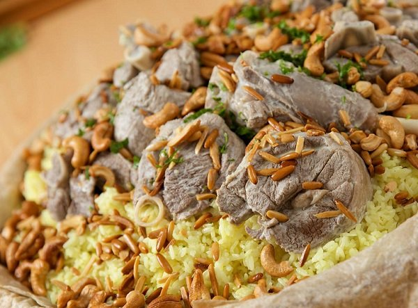

The Most Delicious Mansaf In Jordan
Mansaf (Arabic: منسف) is a traditional Jordanian dish made of lamb cooked in a sauce of fermented dried yogurt and served with rice or bulgur. It is a popular dish eaten throughout the Levant. It is considered the national dish of Jordan, and can also be found in Palestine, Kuwait, Iraq, Saudi Arabia and Syria.